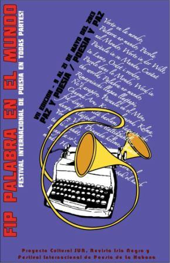

fip palabra en el mundo
festival internacional de poesía en todas partes!
VII edición del 9 al 21 de mayo, 2013
Vorto en la mondo, Palavra no mundo, Parola nel Mondo, Worte in der Welt, Rimayninchi llapan llaqtapi, Paràula in su Mundu, Cuvânt în Lume, Parole dans le Monde, Ordet i verden, Word in the world, Palabra no mundo, Ñe’ê arapýre, Paraula en el Món, Chuyma Aru, Koze nan lemond, Kelma fid-dinja, milá baolam, Nagmapu che dungu, Tlajtoli ipan tlaltikpaktli, Vort in Velt, Dünyada kelime, lhamet ta íhi honhát, Titzaa Yeezii Loyuu, Dunyoda so’z , Слово в мире, Pallabra nel mundu, Hitza Munduan, T’aan yóok’ol kaab


Paz y Poesía / Poesía y Paz
Llamamos a los pueblos a Asamblea Poética! Sembremos Poesía para cosechar Paz.
Que sean los vecinos de uno y otro lugar a convocar en cada barrio, en cada ciudad, donde sea posible e imposible también.
Que los poetas tomen la palabra y en el rito, el buen pan vaya de mano en mano para iluminar las rondas.
Que esos fuegos rompan la noche del belicismo y la codicia, hagan un largo día en donde jueguen nuestros hijos.
Abran todas las ventanas al viento de canto colectivo que unirá a los pueblos en la urgente tarea de la fraternidad.
Nuestra respuesta a los mercaderes del odio es darnos las manos, reunirnos a cantar, congregarnos para abrir los ojos, afirmar el inmenso poder del Amor que en todas las lenguas se expresa en la hermandad.
Y que del Árbol de la Paz, los frutos de la poesía sean distribuidos en la fiesta del Futuro que la Humanidad anhela.
¡Qué la palabra en el mundo crezca, en cada uno y en todos, con todo aquello que el mundo necesita!
Manual de operación
Lo posible (y también lo imposible) en breves líneas
Palabra en el mundo es una iniciativa unitaria y se construye desde la participación de todos. La idea básica es que cada uno de nosotros arme una actividad poética en su ciudad, la suma de todas nos dará como resultado un Festival de Poesía En Todas Partes.
Quienes lo acojan en cada lugar, están en la plena libertad de integrarle las variantes que estimen necesarias: música, teatro, artes plásticas, títeres, fotografía, cine, danza, ciencia, historia, etc.
La publicidad llevará el encabezado:
fip palabra en el mundo
¡festival internacional de poesía en todas partes!
VII edición – 9 al 21 de mayo del 2013
Paz y Poesía / Poesía y Paz
y se añade la institución, el grupo, etc, que convocan a nivel local en cada punto de encuentro.
Promoción:
Todos los organizadores asumen la misión de promover entre sus contactos el Festival, en la idea de lograr la más amplia participación de público y ampliar el Festival a otras ciudades y países.
Poesía en la escuela:
Charlas de poetas en escuelas; docentes trabajan con poesía; los alumnos la escriben, ilustran; Las ilustraciones pueden montarse como muestra en la escuela o intercambiarse con otras que participen e incluso exponerlas en las vidrieras comerciales de la ciudad. Actividades lúdicas en torno a la poesía. Interacción de la poesía con la escultura-pintura-música-teatro-circo-títeres-etc.
Universidad:
Organización de coloquios, seminarios, conferencias en torno a aspectos de la poesía, obra de autor/es, generaciones, etc. Homenajes a poetas locales y universales, debates sobre el papel de la poesía hoy. Actividades de extensión: Realización de recitales, muestras de poesía ilustrada y/o poesía visual. Las secretarías de Extensión u órganos de vinculación con la comunidad ya tienen la dinámica necesaria para estas propuestas, en el espíritu de integración: comunidad universitaria – sociedad.
Canto y poesía:
Invitamos a los músicos, cantautores, grupos musicales, que programen un recital con participación de uno o más poetas. Compartir escenario, musicalizar poemas u otras variantes novedosas. Lo esencial es que la música y el canto se den la mano para expresarnos poéticamente.
Radio:
Durante los días del Festival pueden emitirse programas o microprogramas de poesía, con poetas invitados, entrevistas, lectura, etc. Transmisión de encuentros poéticos en el marco de Palabra en el mundo. Apoyo desde las radios a las actividades de la ciudad.
Televisión:
Puesta al aire de programa o serie de entrevistas a autores locales o incluso cápsulas culturales con poesía leída en el estudio o exteriores. También placas musicalizadas con audio de lectura de una poesía. Etc.
Prensa y revistas:
Publicación en diarios y periódicos de una página o suplemento de poesía. Las revistas pueden participar con un número especial dedicado a la poesía.
Bibliotecas:
Organizar homenajes a poetas o recitales de poesía. Difundir en esa semana, de manera especial, el patrimonio poético de la Biblioteca acercando los libros al público, invitaciones a charlas, debates, lecturas con participación de autores y comunidad. Realizar campañas para acrecentar el patrimonio de libros de poesía. Difusión de su patrimonio poético en los medios.
Jardínes Botánicos, campus iniversitarios, parques:
Organizar una lectura y plantar un árbol por la poesía o en homenaje a uno o varios poetas, con la idea simbólica de crear, con el tiempo, un “Bosquecito de la Poesía” o “Bosquecito de la Palabra Poética en el mundo”, etc.
Municipios:
Muchas municipalidades han declarado la actividad de la ciudad en el marco de Palabra en el mundo: de interés municipal. El interés de las autoridades culturales del municipio o la provincia se ha manifestado en varias oportunidades y esto ha ayudado mucho a los organizadores locales.
Para ser declarado de interés se realiza un simple trámite ante las autoridades de Cultura con el debido tiempo de antelación. Los municipios que lo han hecho se han visto retribuidos enormemente con el éxito de cada convocatoria, que ha tenido eco en diversos medios, no sólo locales.
Los municipios a través de su gestión cultural pueden realizar con gran éxito actividades vinculadas a la poesía en todo su territorio, dando un importante aporte a las dinámicas culturales locales.
Otras Acciones:
Diversos grupos culturales y-o poéticos han llevado poesía a las calles, estaciones ferroviarias y de subterráneos, centros comerciales, cárceles, hospitales, parques y museos. Se han trazado recorridos en parques y bosques bautizando árboles con nombres de poetas finalizando el camino con la plantación de un árbol y una lectura o pequeño acto artístico. También varios grupos distribuyeron poesía por las calles, realizaron afiches con poesía ilustrada que se mostraron en vidrieras, carteleras, paredes, vehículos de transporte público de pasajeros. Se realizó un papiro poético trashumante, se colgaron pasacalles poéticos…
¡La imaginación es inagotable!
Compromisos:
A cada organizador se le enviará el poster promocional vía mail para que pueda ser impreso y distribuído; también – por la misma vía – el certificado de participación para los asistentes.
Muy Importante:
A cada organizador le solicitamos los siguientes datos (que serán incluidos en los programas generales y dados a difusión):
país:
ciudad:
lugar exacto:
día y hora:
Organizadores:
Poetas participantes:
Coordinador para Palabra en el mundo y mail de contacto:
Apoyos de:
Para programas de radio y tv agregar:
Emisora / programa/ conductores, si tiene emisión por la web, el link.
Para las escuelas:
Niveles que participan, docentes y otros datos institucionales que sean oportunos.
Cada organizador debe comunicar los avances y hacer un resumen de resultados.
¡Nada puede acallar el canto, cuando existen justas razones!
En poesía!
Un abrazo cordial
Proyecto Cultural Sur ( pcsur@aei.ca )
Revista Isla Negra ( revistaislanegra@yahoo.es)
Festival Internacional de Poesía de La Habana (proyectosurcuba@uneac.co.cu)
– Festival integrante de la Red Nuestra América de Festivales Internacionales de Poesía-
– Festival co-fundador del Movimiento Poético Mundial.
blogger: http://palabraenelmundo.blogspot.com/
space: http://festivalpalabraenelmundo.spaces.live.com
web: http://www.palabraenelmundo.net/
mail: palabraenelmundo@proyectoculturalsur.net
VII fip palabra en el mundo
festival internacional de poesía en todas partes!